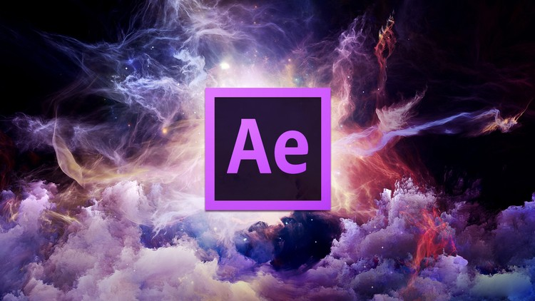
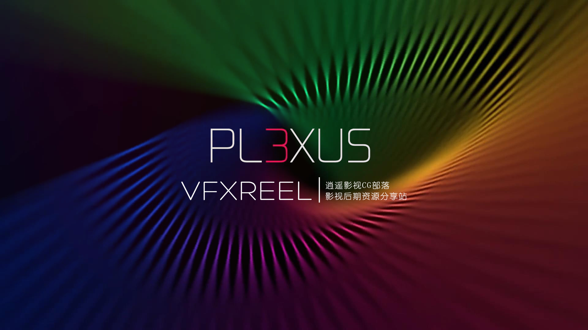

關於AE
圖1 LOGO
Adobe After Effects是一套影片製作軟體，現在由Adobe公司提供更新，用於2D和3D合成、動畫製作和視覺特效，是基於非線性編輯的軟體。
工作模式

圖2 AE介面
Adobe After Effects主要用於創建動態圖形和視覺特效。允許使用者以2D或3D中的各種內建工具和第三方外掛程式(插件)創建動畫。After Effects是基於非線性編輯的軟體，透過「層」控制音訊與影片的合成，這意味著每個單獨的媒體對象（影片剪輯，音訊剪輯，靜態圖像等）都有自己獨立的軌道。與此相反的，一些其他的非線性編輯系統使用另一種模式，即只要媒體對象在時間上不重疊，不同的媒體對象都可以佔用相同的軌道，這種方式可以保持專案檔案的簡潔。After Effects採用的層系統廣泛的應用關鍵幀。雖然其他合成軟體，特別是那些採用樹狀或節點的工作模式（如Nuke），更適合管理大量的素材，但是After Effects能夠透過有選擇性地隱藏層或分組來管理有點雜亂的軌道。
插件
圖3 Rowbyte Plexus v3.1.2b for AE CC 2018 Win/Mac
After Effects支持插件擴展，用戶可選擇多種形式的第三方插件，像是用以模擬雨、雪、火真實感的粒子系統等等。 無論是否使用第三方插件，After Effects都可以渲染3D效果。有些3D插件使用基本的After Effects中的2D圖層。 除了3D效果外，還有很多強大的插件可供選擇，例如將影片製作成電影或卡通，模擬火、煙和水的粒子系統，慢鏡頭，創建動態圖表等可視化訊息，計算2D影片鏡頭裡的3D鏡頭運動，消除閃爍和噪音，將FCP時間線轉化成Avid，加入高端色彩校正，以及其它工作流程改善和視覺效果。
下面整理了相關的AE教學
了解更多